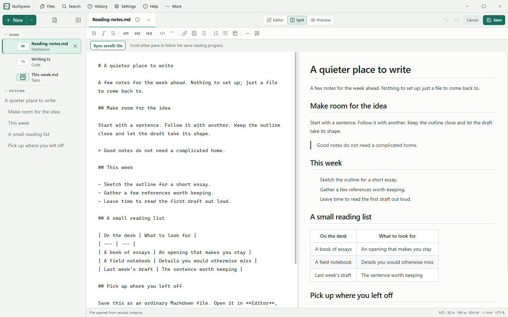
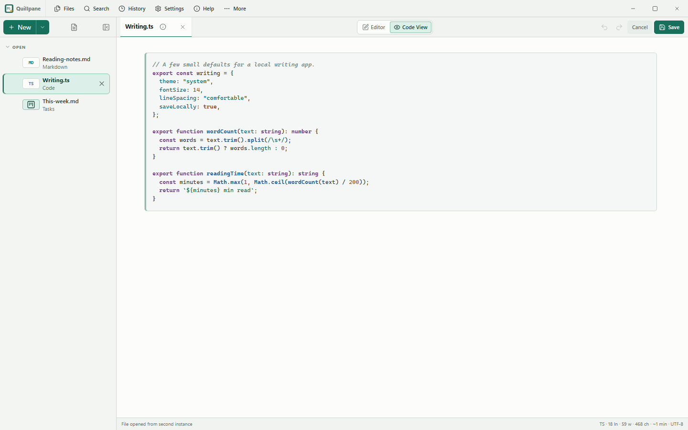
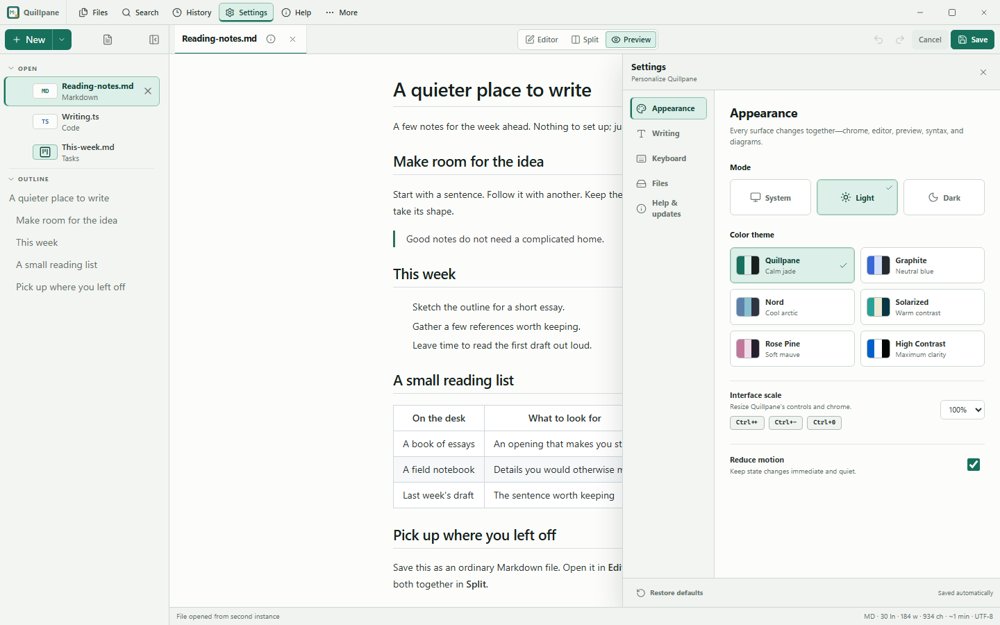

Open-source by shreyam1008
A tiny notepad
that gets out of the way.
Quillpane (formerly Markpad) opens your individual files. Edit Markdown with synchronized split preview, jump to an open note with Ctrl+P, and search the current file with Ctrl+F. No Electron, cloud, or telemetry.
Inside Quillpane
Start with a note.
Write, read, and keep your place. When a note turns into a plan, a task file gives it a little structure.

Real Windows app captures, v0.14.1. This is a screenshot tour; try the sample files in the desktop app.
{kind=link}

{kind=link}

Why Quillpane
Notepad speed. Modern features.
Split View
Edit and preview side-by-side. Resizable divider. Switch between Editor, Split, and Preview modes.
Open Anything
Markdown, text, JSON, YAML, Python, Go, shell scripts, HTML, CSS, and any text file. Native OS file dialogs.
Files made simple
Open individual files, recognize their symbols and colors, and follow the detailed tour from Help. Save drafts wherever you choose.
Session Restore
Close and reopen. Every note, draft, favorite, and active document comes back exactly as you left it.
No Electron
Go + Wails + the system WebView. A native binary without a bundled browser engine.
Safe File Actions
External edits pause Save for a visible choice. Permanent deletion warns before removing the file, recovery draft, and local history.
Formatting Toolbar
Bold, italic, headings, code, links, images, lists, tables, blockquotes. All with icon buttons and shortcuts.
Syntax Highlighting
CodeMirror gives source files incremental language-aware editing; bounded Code View keeps static reading fast.
Responsive Source Views
Long code lines stay in a local scroll region, while plain text wraps safely without widening the workbench.
Themes & Keyboard Settings
System, light, dark, and five color themes share one shortcut catalog with interface scale and reduced-motion controls.
Version History + Diffs
Every save creates a snapshot. Click any version for a unified diff. Green for added, red for removed. Restore instantly.
PDF & Image Preview
PDFs open in your system viewer. Images and relative Markdown image paths render locally through bounded readers.
Single Instance
Only one window runs at a time. Opening a file while Quillpane is running adds it to the existing window.
Smart Lists
Lists auto-continue on Enter. Bullets, numbered lists, and task lists. Enter on an empty item ends the list.
Find & Stats
Ctrl+F searches the current file, including task titles, tags and descriptions. Word count and line stats stay in the status bar.
Also in your notepad
A small planner, when you need one.
New → Task board creates an ordinary Markdown file. Categories organize the workflow; tags label things like Work or Personal. Switch between a list, a board and a calendar, set a date, or restore a task from Trash. Your notes stay notes.
Explore task planning →Public roadmap
Small steps. Visible tradeoffs.
The issue board is the source of truth. Features move forward only when they preserve plain files, offline use, stable interaction, and measured runtime efficiency.
Available · v0.14.2
Notes, with room for a plan
- Markdown, Split preview and recovery history
- Optional task lists, boards, tags and calendar
- Local files and the system WebView
Next
Infinite canvas board
- Arrange ideas and local note references spatially
- Pan, zoom and keep the board in a portable file
- Follow the next feature →
Planned. Not included in the current release.
Explore
Prove before building
- Pinned reference note →
- Bounded local export
- Refresh-on-focus after measurement
Inspired by good plain-file workflows in ZenNotes, deliberately reduced to Quillpane's lighter contract. Read the full roadmap →
Downloads
Get Quillpane for your platform.
Use the GitHub installer above for Linux, or choose a download below. v0.14.2 fixes Ubuntu task dragging, column reordering and collapsed headers, with clearer category colors and wrapped card titles.
Package managers and stores
Quillpane is the new name for Markpad. The APT package and executable remain markpad so existing installations keep working.
Signed APT setup for Debian / Ubuntu · Microsoft Store for Windows
Snap and Flatpak availability
The matching Snap package is on GitHub. Snap Store candidate remains 0.13.4 while publishing credentials are configured; Flathub is not published. Use the current GitHub download or signed APT for Linux. See the distribution tracker for exact Store review status.
View release packagesUnder the Hood